Before You Begin
Ingredients
Equipment
Nutrition
Per tart: 180 calories, 19g carbs, 3g protein, 10g fat, 6g saturated fat, 56mg cholesterol, and 41mg sodium.
Allergen Information
This recipe contains gluten, dairy, and eggs. It may not be suitable for individuals with related allergies or sensitivities.
Tips & Notes
- For best results, measure flour by weight if possible.
- Straining the custard helps create a smooth, glassy finish.
- The dough can be made ahead and chilled overnight.
- Egg tarts are best served warm.
Instructions
-
1. Start the dough
Combine the flour and salt. Add the softened butter and work it into the flour until the mixture looks like coarse crumbs with some pea-sized pieces still visible.
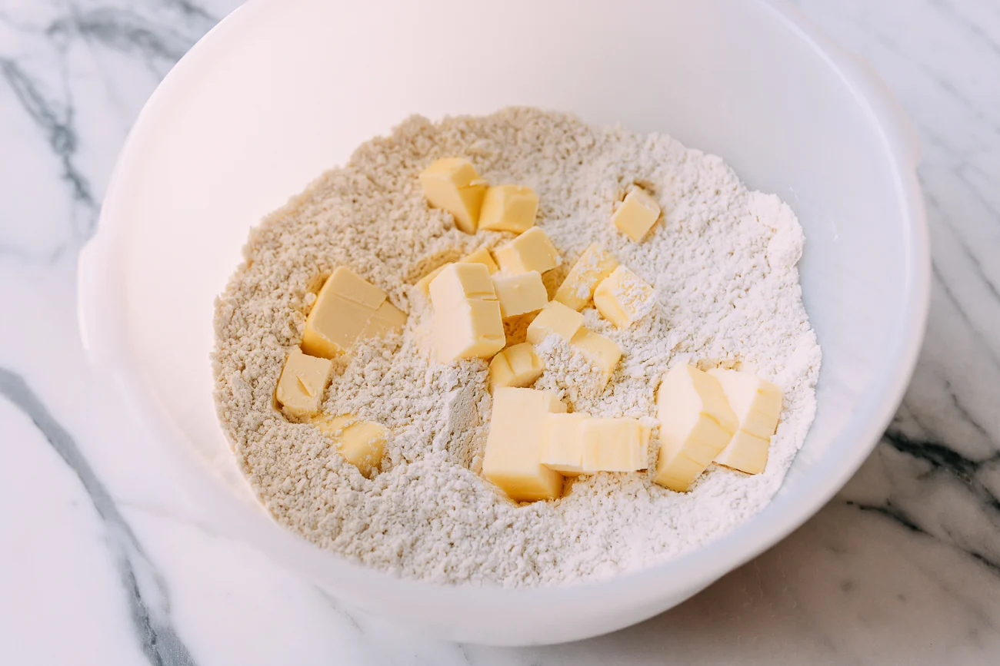
Butter added to the flour. 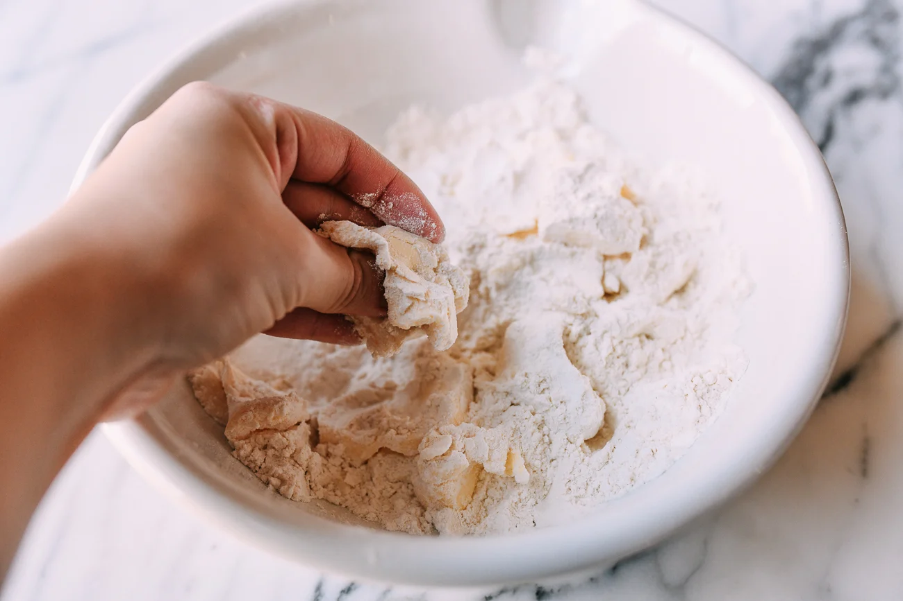
Coarse crumbs with visible butter pieces. -
2. Bring the dough together and chill
Add cold water and gently bring the dough together with your hands. It may look a little dry and rough at first, which is normal. Wrap and chill for 20 minutes.
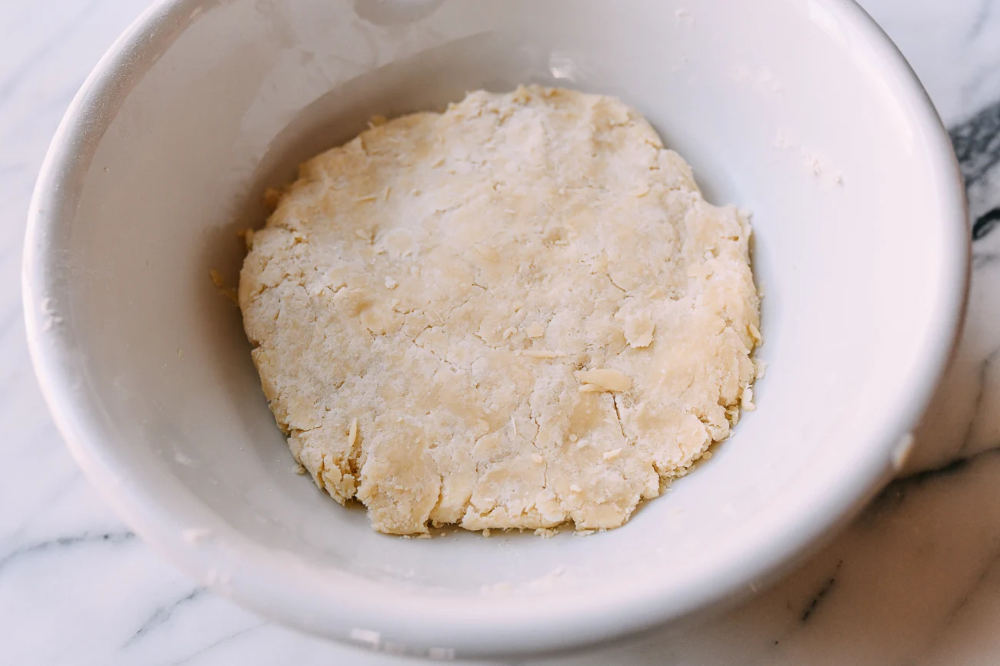
The dough should still look scraggly before resting. -
3. Roll and laminate the dough
Roll the dough into a long rectangle, fold it into thirds like a letter, rotate it a quarter turn, then roll and fold again. Chill the folded dough for 1 hour.
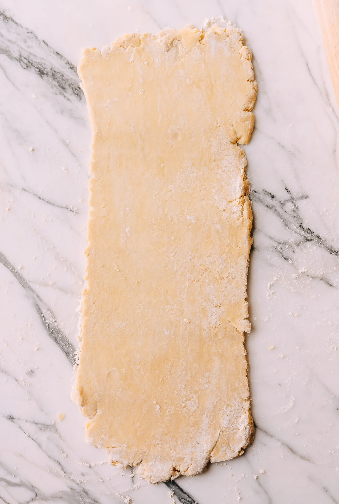
Roll into a long rectangle. 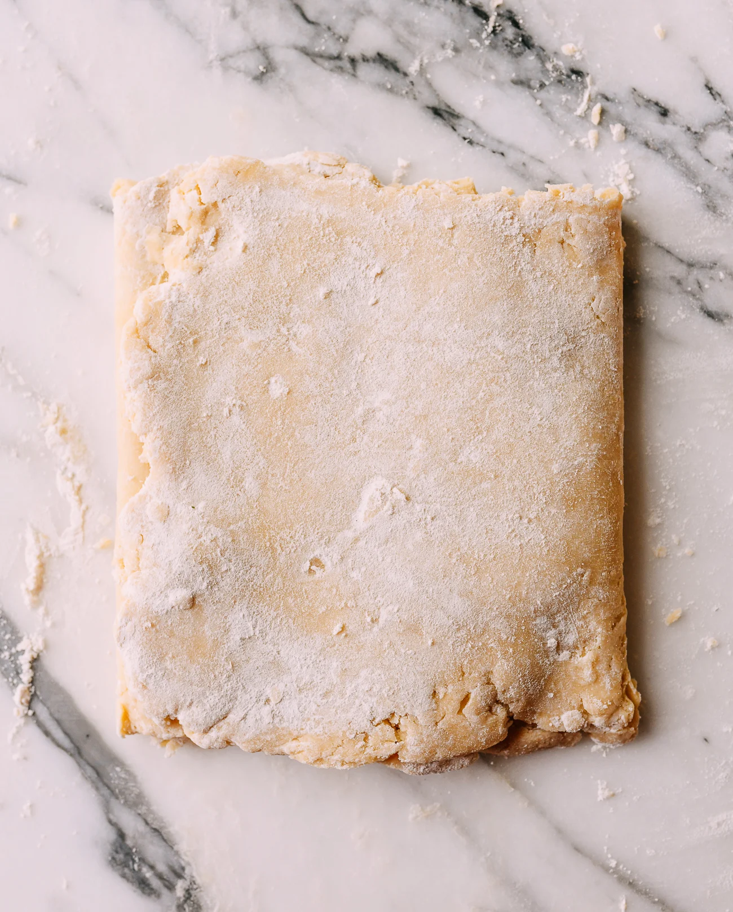
Fold into thirds. 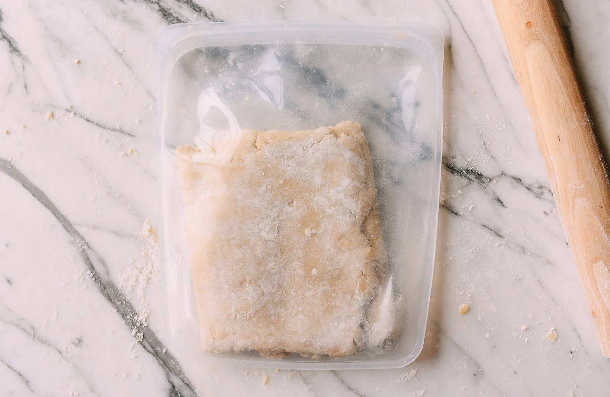
Turn before rolling again. -
4. Make the custard filling
Dissolve the sugar in hot water and let it cool. Whisk together the evaporated milk, eggs, and vanilla, then whisk in the sugar water. Strain the mixture for a smoother finish.
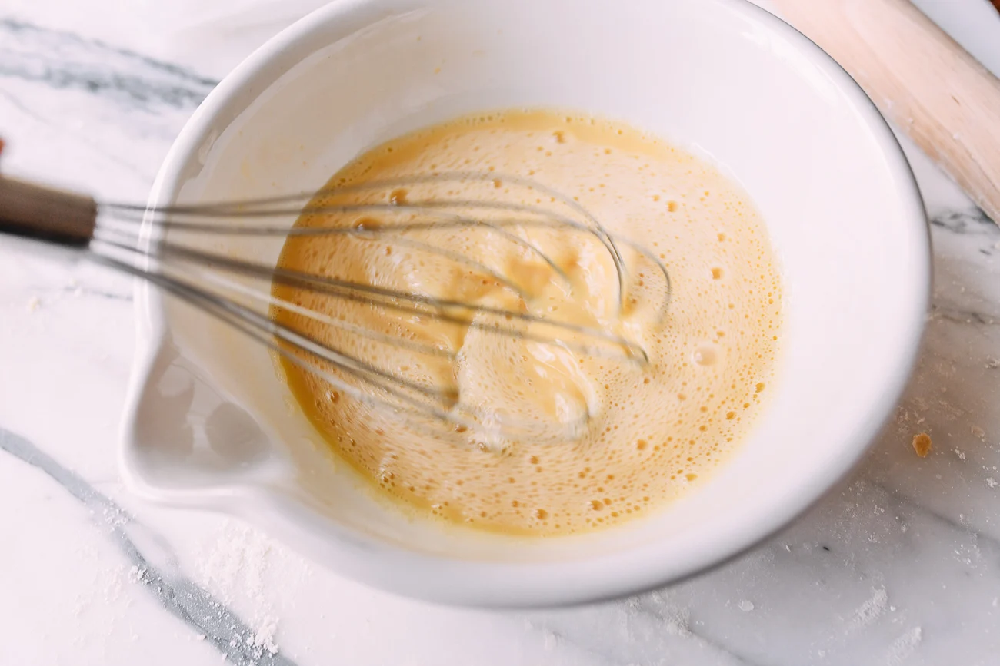
Whisk until fully combined. 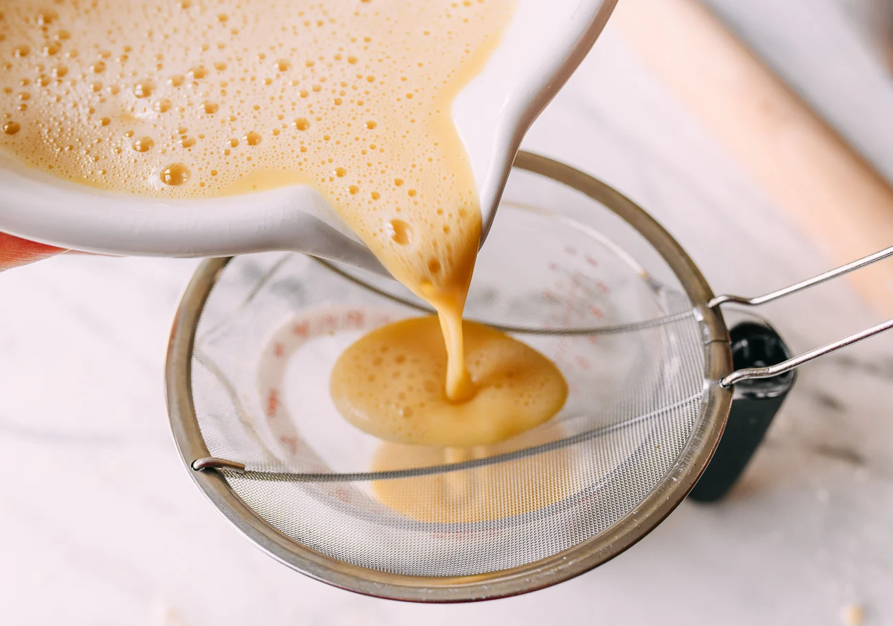
Strain for a smooth, glassy custard. -
5. Roll the dough and cut the shells
Preheat the oven to 375°F. Roll the dough to about 5mm thick, then cut out 4-inch circles for the tart shells.
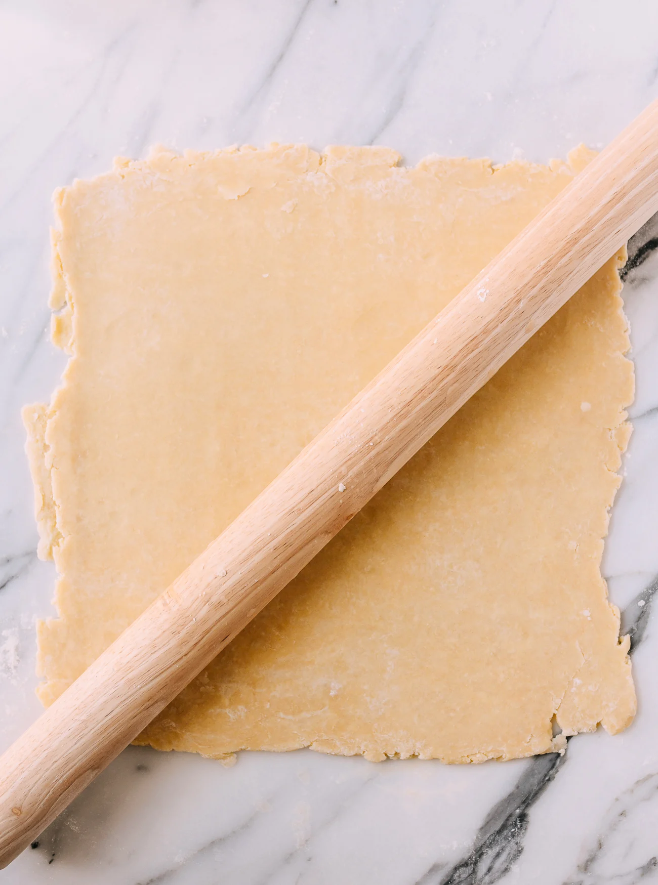
Roll the dough thin. 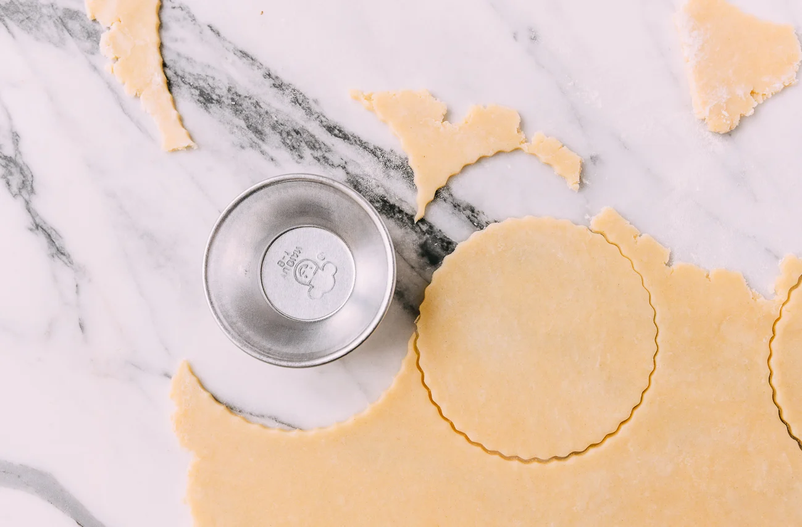
Cut circles for the shells. -
6. Press the dough into the tins
Press each dough round into a tart tin or muffin cup, leaving a slight lip over the top edge to allow for shrinkage while baking.
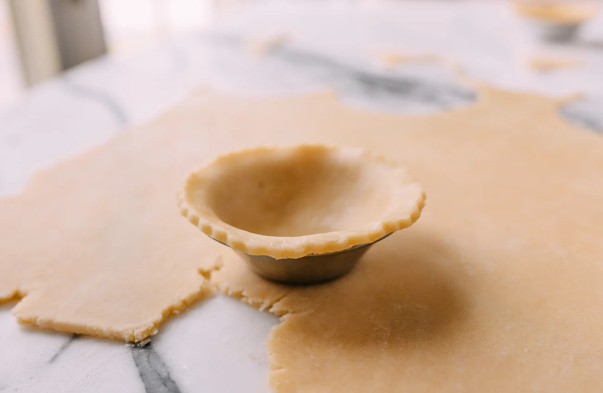
Press dough into the tin with a slight overhang. 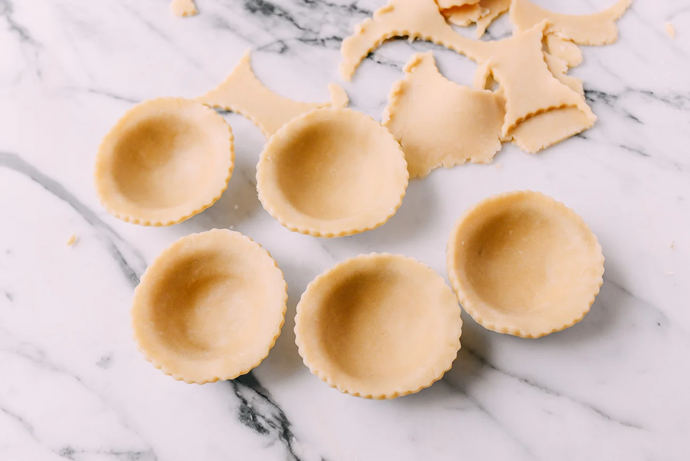
Shells ready before filling. -
7. Fill and bake
Pour the custard into the shells until they are about three-quarters full. Carefully transfer to the oven, reduce the heat to 350°F, and bake until the custard is just set.
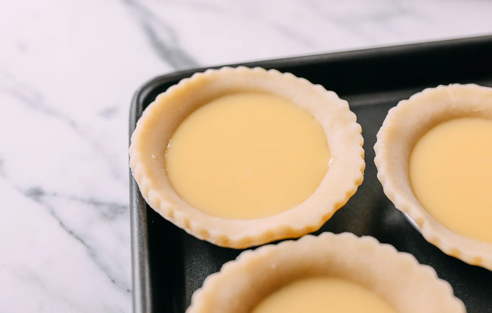
Fill the shells carefully without overfilling. -
8. Cool and serve
Let the tarts cool for at least 10 minutes before serving. They are best enjoyed warm, when the pastry is still crisp and the custard is silky.
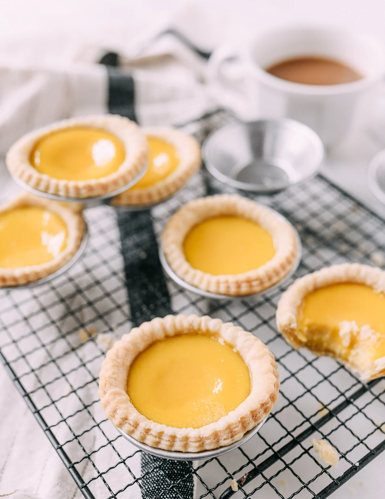
Cool slightly before eating. The finished tarts should have a glossy custard top.